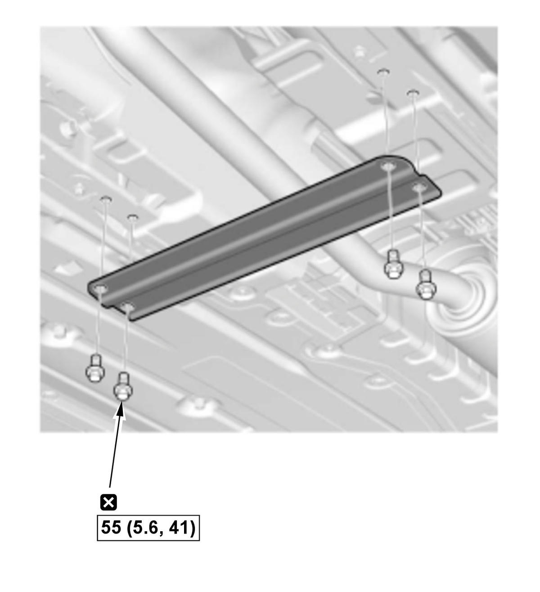

LEMON Manuals
: Even more car manuals for everyone: 1960-2025
Home
>>
Honda
>>
2016
>>
Civic LX, 4D Sedan, Automatic CVT Trans
>>
Repair and Diagnosis (Single Page)
>>
Body & Frame
>>
Frames, Subframes & Crossmembers
>>
Frame - Service Information
>>
Removal and Installation
>>
Front Floor Brace Removal and Installation (5-door) (2017 2018 2019 2020 2021)
>>
Removal and Installation
Removal and Installation
Vehicle - Lift
Front Floor Brace - Remove
Fig 1: Front Floor Brace And Bolts With Torque Specifications

Courtesy of HONDA, U.S.A., INC.
All Removed Parts - Install
1. Install the parts in the reverse order of removal.